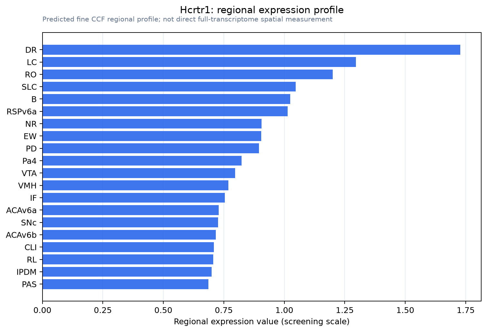

Hcrtr1
Orexin/Hypocretin receptor type 1 (Hypocretin receptor type 1) (Orexin receptor type 1) (Ox-1-R) (Ox1-R) (Ox1R)
Spatial tier: RESTRICTED · Class: GPCR · Top region: DR (Dorsal nucleus raphe) · Positive regions: 24/554
43.1Discovery Score
38.8Targetability Score
CEvidence grade C
What this means: Hcrtr1: fine CCF profile is restricted toward DR (top regions: DR, LC, RO, SLC, B; 24 positive regions); direct spatial validation is still required.
Direct spatial evidence
MERFISH REGION LOCATOR

Regional expression figure

Predicted WMB × fine-CCF profile; not direct full-transcriptome spatial measurement.
Spatial profile
Evidence and specificity
- Evidence status
- PREDICTED_FINE
- Direct sources
- None; predicted localization only
- Exclusive threshold
- 12 positive regions out of 554
- Spatial specificity
- 0.291
- Top-region fraction
- 0.056
- Filter status
- PASS
Interpretation limits
- Cell-type-to-region projection is imputed expression, not direct spatial measurement.
- Adult reference atlases do not establish stability across age, sex, strain, state, or disease.
- Transcript abundance does not guarantee protein abundance or genetic-tool performance.